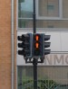
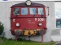
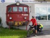

Утром аэропорт наполнился привычной суетой. Проблем с нашими электронными билетами на посадке не возникло. Багаж взвешивали, байки нет. Порадовало, что велосипеды не поставили на общую ленту, а попросили отнести в сторонку, мол, их заберут отдельно. Приятно.
Перелет занял немногим более часа и прошел в полудреме. Вот и Осло. Прохладно и пасмурно. Получили багаж, ждем байки. 5 минут, 10, 15. Начинаю переживать, выключили ленту. Отлавливаю человека в униформе, начинаю объяснять ему, что ко мне, мол, прилагалось 3 байсикла, а их нету. . . Человек делает широки жест рукой и говорит чего-то там про 7 или 8 шлюз. Иду в том направлении куда послали. Действительно в дальнем углу огромного зала, стыдливо спрятавшись за колонну, стоят наши байки, причем мой вверх тормашками. Видать тут все очень догадливые иначе понять, где искать велики точно нельзя.
Выходим на улицу и начинаем собирать байки, это уже второй раз за сутки. Все исправно, слава богу. Выбираем трехзначную дорогу в сторону Осло и покатили. Холмы, миленькие сельхозпейзажи, но едется плохо, сказываются 2 бессонные ночи. Щелкаю фотоаппаратом на лево и на право, я же еще не знаю какие красоты нас ждут впереди. Это уже потом, когда не будет хватать места на флешке, я удалю все эти снимки, а тогда все казалось таким интересным.
Дорога до Осло оказалась сильно длиннее, чем я ожидал. Начинаются живописные пригороды Осло, но чем ближе мы подъезжаем к центру, тем печальнее становится мне. Да я точно не люблю большие города. Еще в пригородах в глаза бросается множество арабов и негров. Такое ощущение, что мы в студгородке университета имени Патриса Лумумбы, мы поначалу действительно подумали, что рядом общежитие студентов. Впереди было веселее. Наконец добрались до места обозначенного OsloS, где в поисках ж/д станции выехали на улицу, которая поразила всех. Кого тут только не было: арабы, негры, индусы, женщины в сари. . . разноголосица, все идут через дорогу там, где им удобно, машины сигналят. Если бы мне показали это раньше, то Норвегия была бы последней в списке стран, о которых я подумал бы. Я слышал о большом количестве эмигрантов, но такого не ожидал увидеть.
Станция OsloS оказалась относительно крупным вокзалом с множеством платформ и суеты вокруг. Люди активно меняли свои электронные билеты на билеты бумажные, ну и я к ним присоединился. Попытался выяснить, где и сколько нужно доплатить за байки, но был послан к проводникам.
Поезд уже стоял и ждал нас, по крайне мере никого кроме нас на платформе не было. Из первого вагона выскочил проводник и направился в нашу сторону, всячески показывая, чтобы мы несли байки туда.
В первом вагоне оказалось большое по площади отделение для велосипедов со специальными крепежными ремнями. Закрепили и сели в свой 3 вагон. Помня восторги ребят по поводу супер-пупер новых и блестючих норвежских вагонов, начинаю оглядываться по сторонам. А наш то весь пошарпаный! Все углы отбиты, поцарапаны, а когда поехал, что-то начало дребезжать как в самом разбитом нашем трамвае.
Зато народу примерно 5 человек на вагон, Пришел проводник, тот самый, который помогал с великами. Проверил билеты, денег за байки не взял. Странно. Но мы не стали настаивать. За окном показывали кино про Норвегию, но мерное покачивание вагона усыпило всех и быстро.
Уже начинало темнеть, когда поезд остановился на конечной станции Кристинсанд. Пустынная платформа. Несколько арабов и один негр. Третий раз за дорогу собираем байки. Получается значительно быстрее. Как же хочется уже лечь горизонтально и уснуть! Но надо отъехать от города и найти место. Едем по велодорожке, попутно тычась носом во все дырки, но места под палатку не находим, сплошная населенка. Зато находим несколько куч мусора, пару бомжей. . . это точно не Финляндия!
Наконец на очередном повороте находим неплохое место для стоянки, правда оно тоже не пустынно - красивый рыжий кот с колокольчиком на шее внимательнейшим образом смотрит за нашей суетой по установке палатки. Выждав момент, когда мы залезли и начали шуршать внутри палатки он наконец решает - пора и делает прыжок на скат палатки, при этом широко расставив лапы.
Это было неожиданно. Палатка отпружинила его обратно в темноту но в сознании четко отпечатались лапы вдавившиеся на секунду сквозь скат палатки вовнутрь. Огромные такие. Да, нет зверя страшнее кошки! Поржали малость и улеглись спать. Спать горизонтально, вот оно счастье!
То, что казалось горизонтальным вечером, утром выглядело по-другому.

Утро, кстати, началось весело. Слышу, кто-то шуршит по рюкзакам. Странно, рюкзаки в тамбуре палатки, ничего себе наглость! Расстегиваю молнию и резко высовываю голову в тамбур и буквально втыкаюсь в наглую, рыжую, усатую морду все того же рыжего кота. Оказывается, он делал утреннюю ревизию наших рюкзаков, наглец, еле выпроводили.
Трек этого дня Трек 2008-07-12.gdb
  